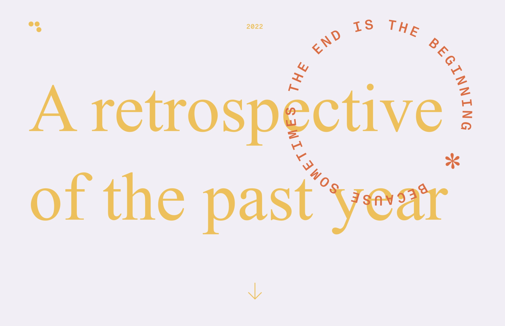

Journey Maps, User Flows & CSS Box Model
31st July - 4th August
Our site of the week was Retrospective, a modern, bright and engaging platform. I particularly liked how the navigation bar text changed colour with the background as you scrolled. This ensures the user can read the text as the contrast remains strong. I haven’t noticed this technique on many websites before.
The tutorial discussed the history of web design from 2009-present. Here, I learnt that Figma was only developed in 2016 by two computer science students aiming to design an interface that allowed real-time collaboration within a single file. Again, I was slightly disbelieving that the software I rely on in my degree is also so freshly established. It’s a stark reminder of how quickly the web design world has and is still being created.
From here, we covered customer journey maps, including stages of the journey, activities, feelings and experiences. This information is gold for UX designers as it offers multiple advantages to connect designers to their customer experience. We also learned about user flow charts, another technique designers use to understand further and improve a user’s experience. I am excited to apply these tools to my fictional character, Sarah Hayee. I have begun piecing together her character and look forward to using techniques to design a helpful website.
Here's the tools we will be using to understand our user in Assignment 1:

The lecture covered the CSS box model, walking us through HTML and CSS and piecing together an essential website with headings, paragraphs and a PNG. I am thoroughly enjoying learning coding techniques. It is not as difficult as I initially thought, and I am gaining confidence! This short video was so valuable for my coding development. I look forward to applying my developing HTML skills in later assignments.